My life in skateboarding
I have been riding a skateboard since I was 12 years old, back in 2003. Skateboarding has been and still is one of the most important things in my life. For me, skateboarding is much more than a hobby: It has shaped my character, informed my values, and allowed me to meet most of my longtime friends.
I started skating around this time:
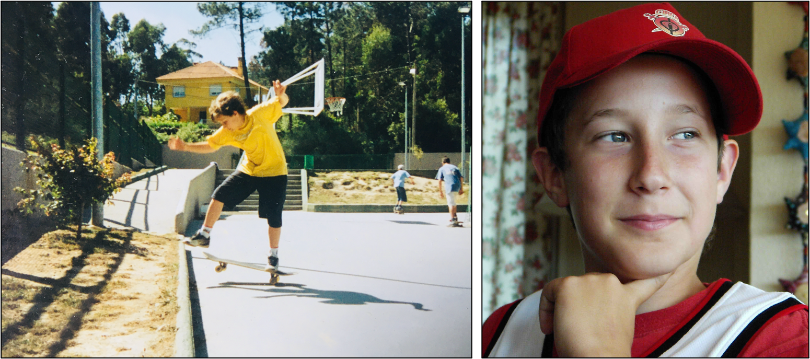
I continued to ride in my adolescence:
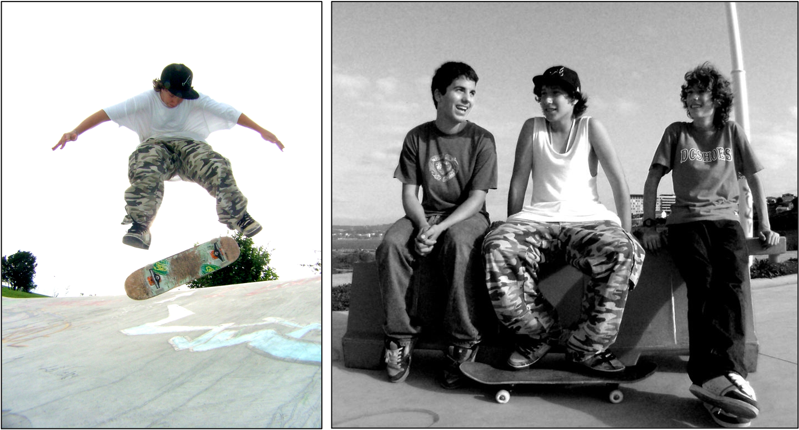
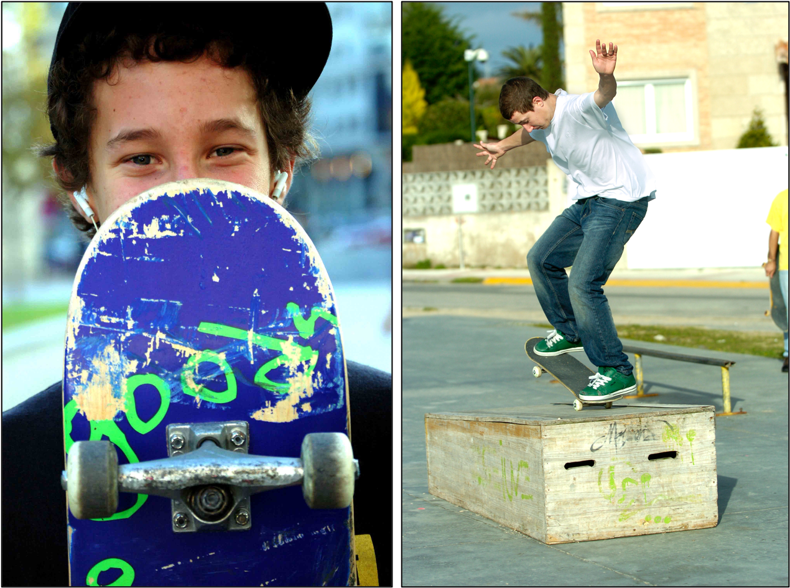
I kept riding while I was in Salamanca doing my undergraduate studies:
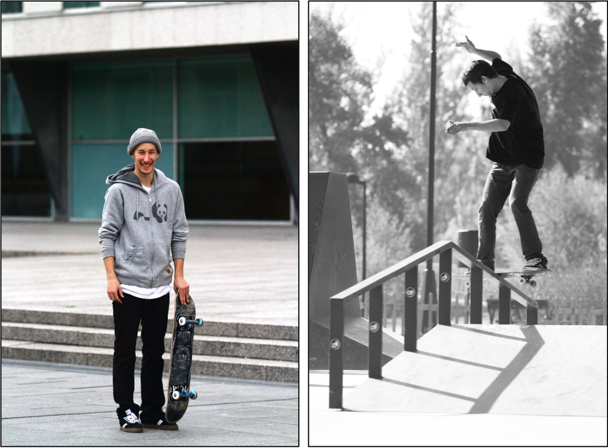
I also kept skating when I returned home afterwards:
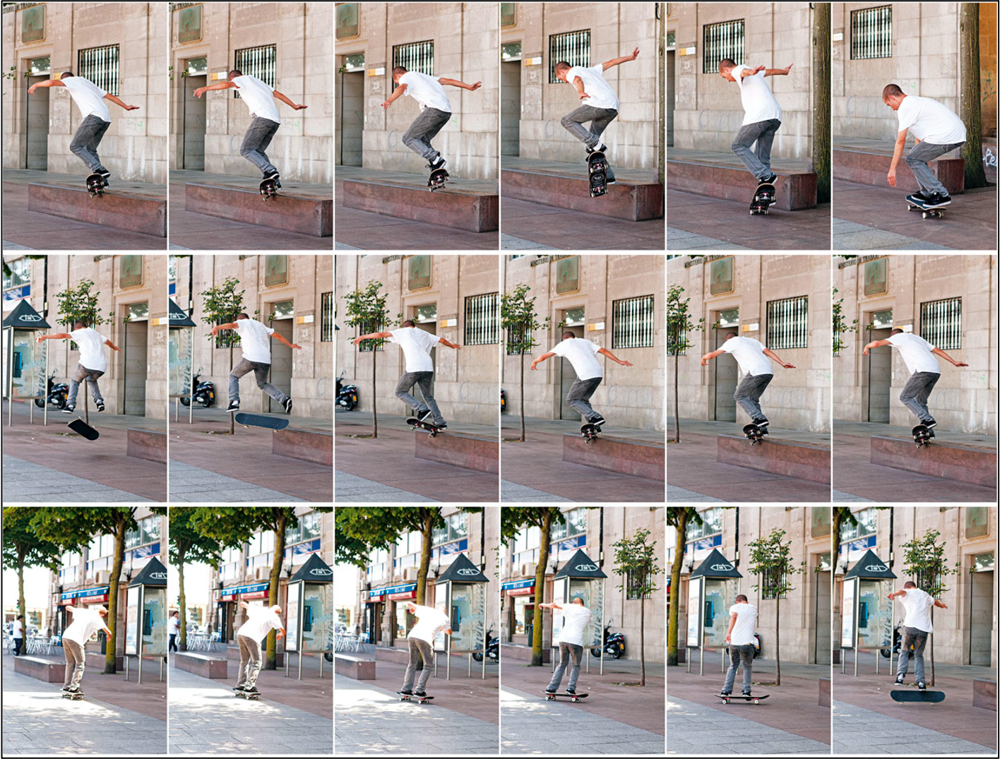
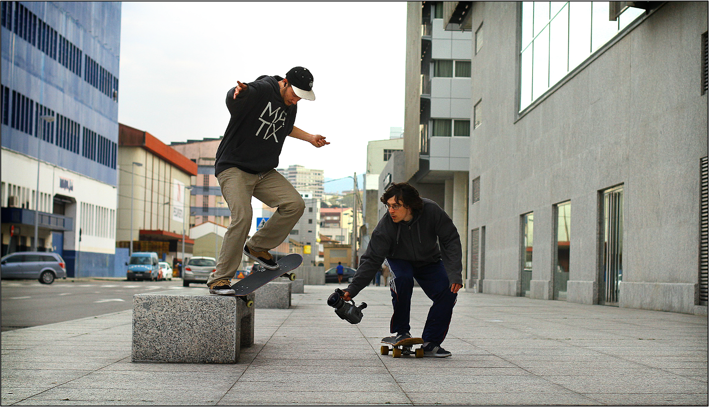
And finally, to this day I keep riding my skateboard:
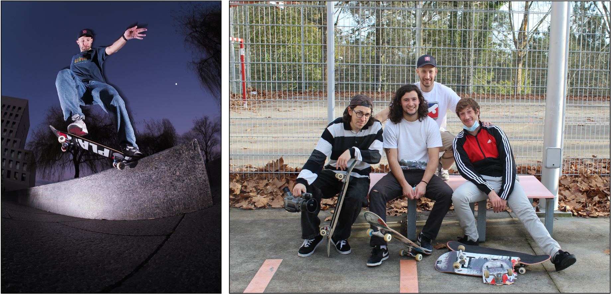
My videos
I'm lucky enough to have been featured in several skate videos with many of my friends. Here is a selection of these videos:
- Life’s a Plaza, a Plaza Skateboards video 8/2013
- First Step, a First Love video 11/2014
- NTC Skate Video 6/2015
- Popcorn Video, a Popcorn Hardware video 12/2015
- Popcorn Video II, a Popcorn Hardware video 12/2017
In addition to the above videos, here you have a compilation of most of my skate video parts:
- Juan’s part in GORE skate video 1/2005
- Juan’s part in Cuajanudo 2006 skate video 3/2007
- Juan’s Ambulansin 7/2009
- Juan's RVR Ten Tricks 2/2010
- Juan Gefaell clip for Plaza Skateboards 10/2011
- Juan Gefaell welcome to the First Love team 3/2012
- Juan’s part in Life’s a Plaza, a Plaza Skateboards video 8/2013
- Juan Gefaell & Rubén Cajaraville skate in Salamanca 4/2014
- Juan's part in First Step, a First Love video 11/2014
- Juan Gefaell & Gerardo Anaya remix from Popcorn Video 10/2016
If you only want to see one of my videos, I would recommend my Welcome to the First Love team part.
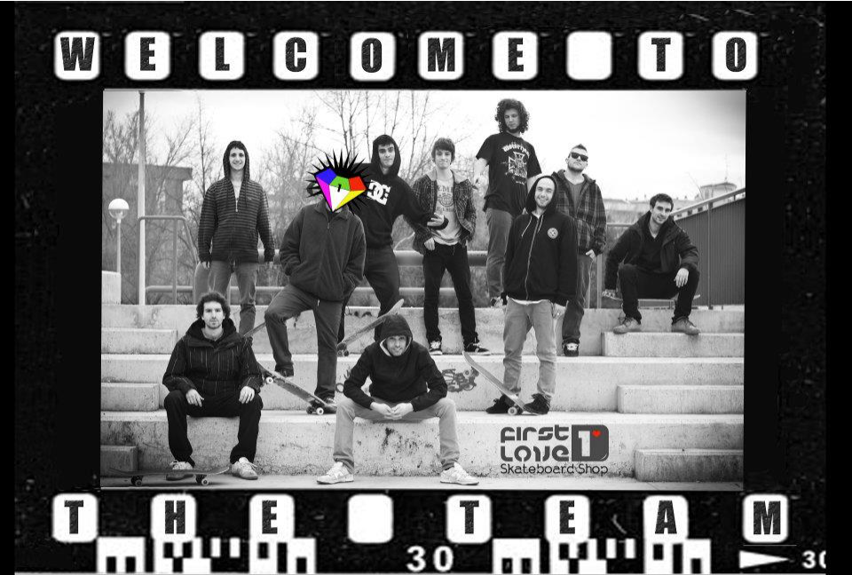
I thank Charly (Carlos Pereira), Felipe, Harry, Luis Carabias (Jefe), Luispas, Juancho from Salamanca, Pocholo, Kruman, Kike, and other homies for all their photos and videos.
The NTC crew
Here you have some photos by Charly of our skate crew at Vigo (NTC):
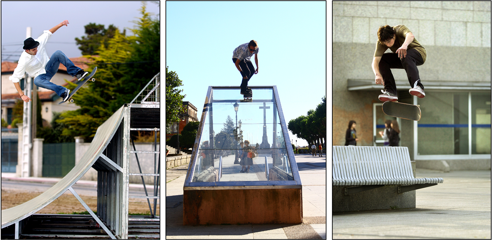
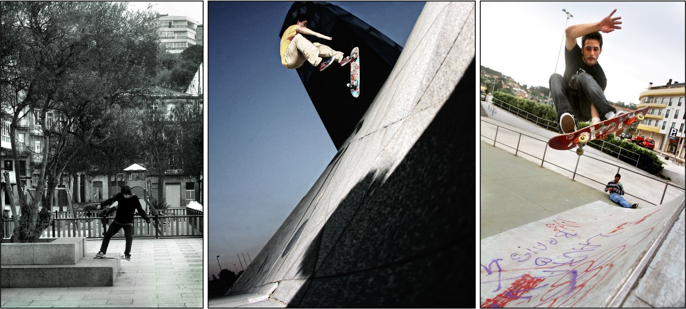
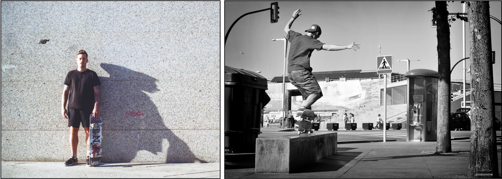
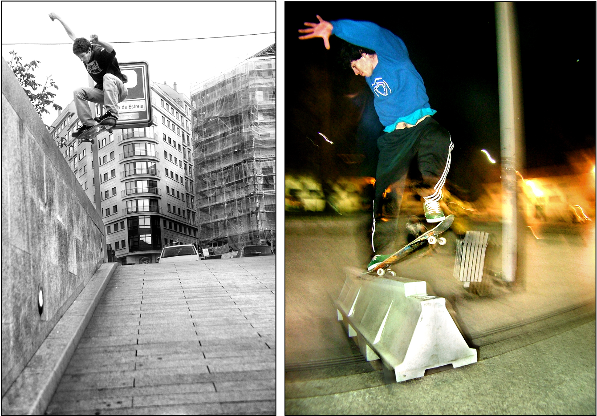
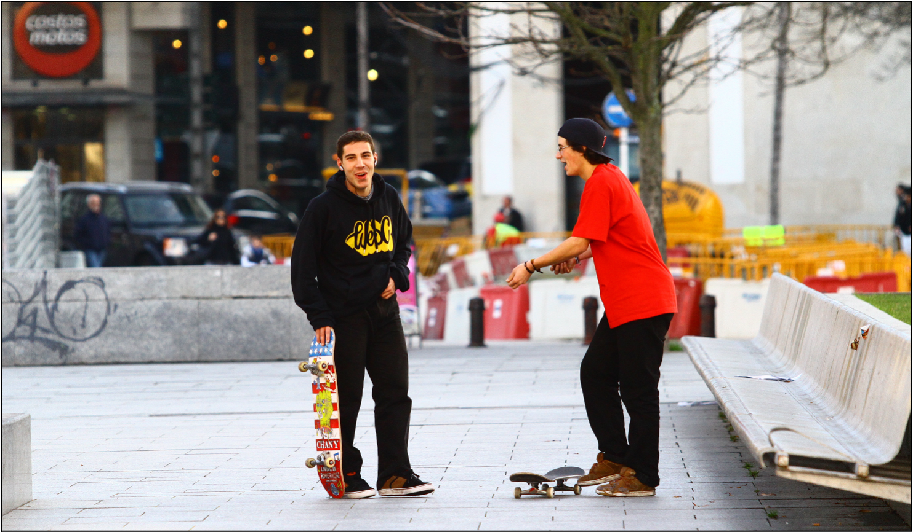
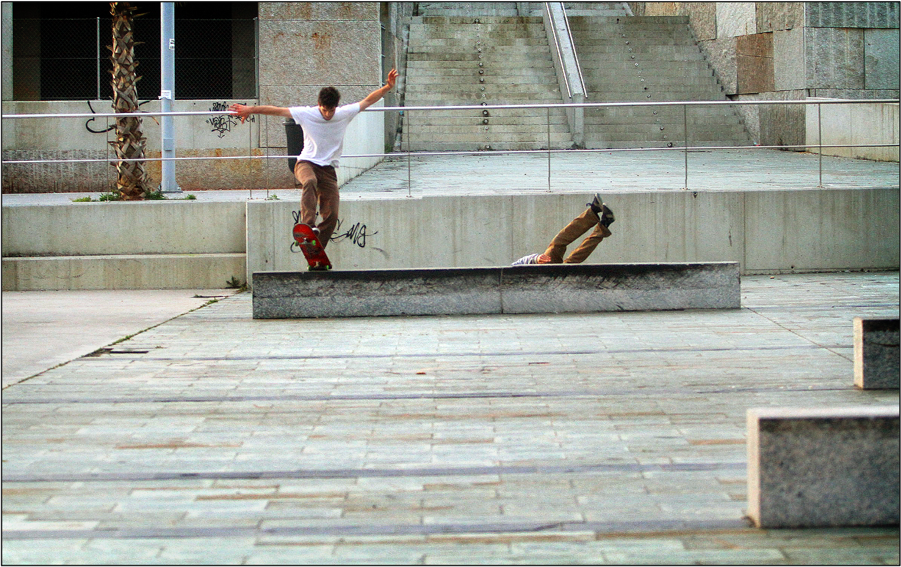
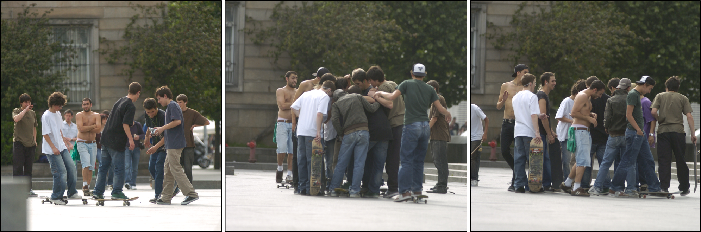